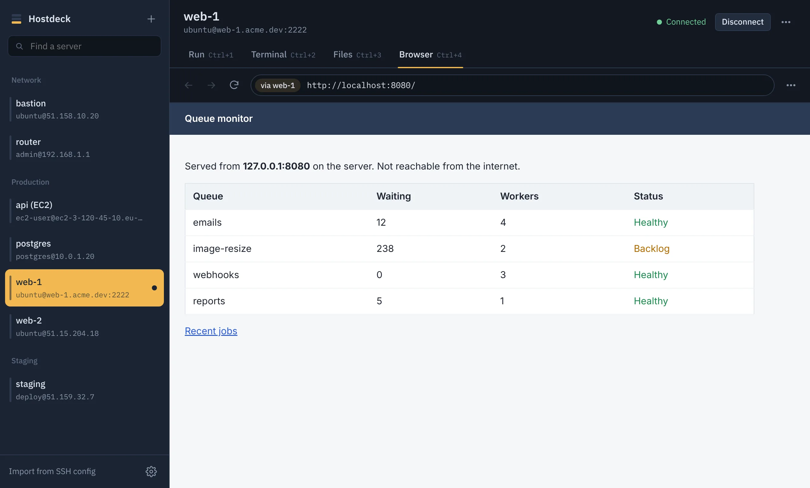

Save your servers. Pick one. Run.
Hostdeck is a desktop SSH manager for Linux, Windows and macOS. Keep every server you reach over SSH in one list, then run commands, open a terminal, upload or edit files, and open web tools that only the server can reach. Your connections and keys never leave your computer.
Press Run to see what happens.
A demo in your browser. The app connects to your real servers.
How it works
Save a server
Name, address, username and how you sign in. Or import everything from your
~/.ssh/configin one go.Pick it and type
Select the server, write a command. Your recent commands and saved snippets are one click away.
Run
Hostdeck connects, runs it and shows the output with the exit code. Keep the connection open for the next one, or let it close.
One window for the work you do over SSH
Four tabs per server. Use whichever fits the job.
Run commands and read the result
Each run gets its own block with live output, errors in red, the exit code and how long it took. Run it again or copy the output with one click.
- Choose the folder a command runs in
- History and snippets per server
- Asks before anything like
rm -rf /orreboot

A real terminal for longer sessions
Open a full interactive shell when you need vim, htop, a database prompt or a deploy that asks questions. The connection stays up while it is open.

Upload, download and edit files
Browse the server, drag files in from your desktop, and edit configs with syntax highlighting. If someone else changed a file since you opened it, Hostdeck tells you before you overwrite their work.
- Folders upload and download with progress
- Search the folder as you type, or every folder below it
- Rename, change permissions, delete
- On OpenSSH servers, saves are atomic: a dropped connection never leaves half a file

Open web tools that only the server can reach
The Browser tab loads pages through the SSH connection, so localhost:8080 is the server's own localhost. phpMyAdmin, pgAdmin, a queue dashboard or anything else you kept off the internet opens right here, with no firewall changes and no tunnels to set up.
- Lists the web ports the server is listening on
- Private addresses work too, like a database host on 10.0.0.5
- Separate cookies and sign-ins for each server

Works with how your servers let you in
Ubuntu on Scaleway, Amazon Linux on EC2, a Raspberry Pi at home, an old router. If it speaks SSH, Hostdeck can reach it.
- Password
- Saved encrypted in your system keychain, or asked for every time.
- Private key
- Point to a key file such as an EC2
.pem, or paste one. Passphrases supported. - SSH agent
- Uses ssh-agent, the Windows OpenSSH agent or Pageant, with optional agent forwarding.
- Two-factor login
- Keyboard-interactive prompts, such as a one-time code, are shown as you connect.
- Jump hosts
- Reach private machines through a bastion, up to five hops deep.
- Old devices
- Turn on legacy algorithms for older servers and network gear, per server.
Nothing leaves your computer
There is no Hostdeck account and no Hostdeck server. The app talks only to the machines you add, and it stores everything in one file in your user folder.
- Secrets in your keychainPasswords and pasted keys are encrypted with the macOS Keychain, Windows DPAPI or the Linux secret service.
- Host keys checkedYou confirm a server's fingerprint the first time. If it ever changes, Hostdeck stops and asks.
- No telemetryNo analytics, no update pings, no crash uploads.
- Exports without secretsMove your server list to another computer; passwords and keys stay behind.
Download
Version 0.1. Installers are built from the public source code on GitHub.
Linux
AppImage runs on most distributions. The .deb package suits Ubuntu and Debian.
Windows
Installer for Windows 10 and 11, or a portable .exe that runs without installing.
macOS
One app for Apple silicon and Intel Macs, macOS 12 or later.
First launch on macOS or Windows may show a warning because the app is not code-signed yet. The install guide explains how to open it.